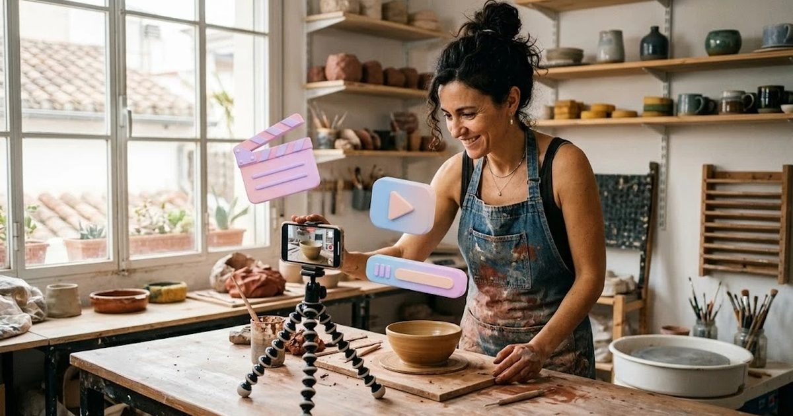

En resumen
- Guion: ChatGPT, Claude o Gemini (gratis).
- Grabar: tu móvil. Lo real sigue funcionando mejor que lo 100 % generado.
- Editar y subtitular: CapCut, Canva o Edits (gratis).
- Sin salir en cámara: voz en off, fotos animadas o un avatar de IA (HeyGen, Synthesia).
El vídeo corto (Reels, TikTok, YouTube Shorts) es el formato que más alcance da hoy en redes sociales, y también el que más frena a los negocios pequeños: «no sé editar», «no quiero salir en cámara», «no tengo tiempo». La IA resuelve buena parte de esas excusas. Esta guía te enseña a crear vídeos con IA para redes sociales paso a paso, sin experiencia previa y empezando gratis.
Paso 1: el guion, con IA en dos minutos
Un buen vídeo corto tiene tres partes: un gancho en los primeros 2 segundos, un contenido útil o curioso y un cierre con una llamada a la acción. Pídeselo así a tu asistente:
Escribe 5 guiones para vídeos de 20-30 segundos para Instagram Reels de mi [tipo de negocio] en [ciudad]. Cada guion con: 1) una frase gancho para los primeros 2 segundos, 2) qué se ve en cada plano (grabado con el móvil), 3) el texto en pantalla, 4) una llamada a la acción final. Tono cercano. Temas: [un consejo, un detrás de cámaras, un producto estrella, una pregunta frecuente, un antes y después].
Guarda los guiones que te gusten en tu calendario de contenido para grabar varios el mismo día.
Paso 2: grabar (o no) con el móvil
- Graba en vertical y con luz natural, cerca de una ventana.
- Planos cortos de 2-4 segundos: es más fácil de editar y más dinámico.
- Si no quieres salir: graba tus manos trabajando, el producto, el local o el proceso, y añade tu voz en off o texto en pantalla.
- Graba de más: la IA te ayudará a elegir y recortar.
Paso 3: editar y subtitular con IA
Aquí es donde la IA más tiempo ahorra: corta silencios, añade subtítulos automáticos (imprescindibles: mucha gente ve los vídeos sin sonido) y sugiere música y transiciones.
| Herramienta | Lo mejor | Plan gratis | Precio de pago |
|---|---|---|---|
| CapCut | El editor más completo para móvil y ordenador; subtítulos automáticos | Sí, con funciones básicas | Standard 11,99 €/mes; Pro 23,99 €/mes (199,99 €/año) |
| Canva | Plantillas de vídeo con tu marca; fácil si ya lo usas | Sí | Canva Pro, unos 12 €/mes |
| Edits (Instagram) | App gratuita de Meta pensada para Reels | Sí, gratuita | — |
| HeyGen | Avatares que hablan a partir de un texto; traducción de vídeos | 3 vídeos al mes con marca de agua | Creator, 29 $/mes (unos 24 $ con pago anual) |
| Synthesia | Avatares profesionales para vídeos explicativos | Limitado | Starter, 29 $/mes (18 $ con pago anual) |
Paso 4: texto de la publicación y hashtags
Con el vídeo listo, pide a la IA el texto que lo acompaña:
Escribe el texto para publicar este Reel: [describe el vídeo]. Máximo 2 frases, una pregunta que invite a comentar y 4 hashtags: 2 del sector y 2 locales de [ciudad].
3 tipos de vídeo fáciles para empezar
- Pregunta frecuente: responde en 20 segundos la duda que más te hacen. Contenido útil y fácil de grabar.
- Detrás de cámaras: cómo preparas un pedido, abres el local o haces tu producto. Genera cercanía.
- Antes y después: ideal para peluquerías, reformas, limpieza, estética o restauración.
¿Y los vídeos 100 % generados por IA?
Herramientas como los generadores de vídeo de Google (en Gemini) o de OpenAI crean clips realistas a partir de texto. Son útiles para fondos, transiciones o ideas creativas, pero para un negocio pequeño tienen dos problemas: resultan genéricos y pueden generar desconfianza si parecen mostrar algo que no es real. Nuestra recomendación: úsalos como complemento y etiqueta siempre como IA el contenido realista generado, como exigen TikTok, Instagram y YouTube.
Errores habituales
- Empezar el vídeo con el logo o un saludo largo: pierdes a la gente en 2 segundos.
- No poner subtítulos.
- Publicar solo vídeos de venta: mezcla consejos, detrás de cámaras y producto.
- Usar un avatar de IA para todo: para un negocio local, la cara y la voz reales generan más confianza.
Preguntas frecuentes
¿Cuál es la mejor herramienta gratis para hacer vídeos con IA?
Para un negocio pequeño, CapCut es la más completa en su versión gratuita: edita vídeos del móvil, añade subtítulos automáticos y tiene plantillas. Canva también es muy buena si ya la usas para tus diseños.
¿Puedo hacer vídeos para mi negocio sin salir en cámara?
Sí. Puedes grabar solo tus manos, tu producto o tu local con una voz en off, montar vídeos con fotos y texto animado, o usar un avatar de IA con herramientas como HeyGen o Synthesia.
¿Cuánto cuesta crear vídeos con IA?
Puedes empezar gratis con CapCut, Canva o la app Edits de Instagram. Los planes de pago rondan los 12-24 € al mes (CapCut, Canva Pro) y las herramientas de avatares, desde unos 18-29 $ al mes.
¿Los vídeos hechos con IA funcionan peor en redes?
No por estar hechos con IA, sino si parecen genéricos. Los vídeos que mejor funcionan para negocios pequeños siguen mostrando personas reales, el producto y el día a día; la IA sirve para escribir el guion, editar más rápido y subtitular.
¿Tengo que indicar que un vídeo está hecho con IA?
Si el vídeo muestra personas, voces o escenas realistas generadas por IA, TikTok, Instagram y YouTube piden etiquetarlo como contenido generado con IA. Si solo usas IA para editar o subtitular un vídeo real, no hace falta.
Escrito y revisado por el equipo editorial de MarketIA. No tenemos acuerdos comerciales con las herramientas mencionadas. ¿Ves un dato desactualizado? Avísanos.